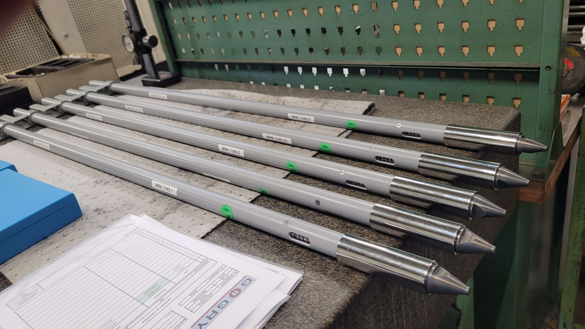
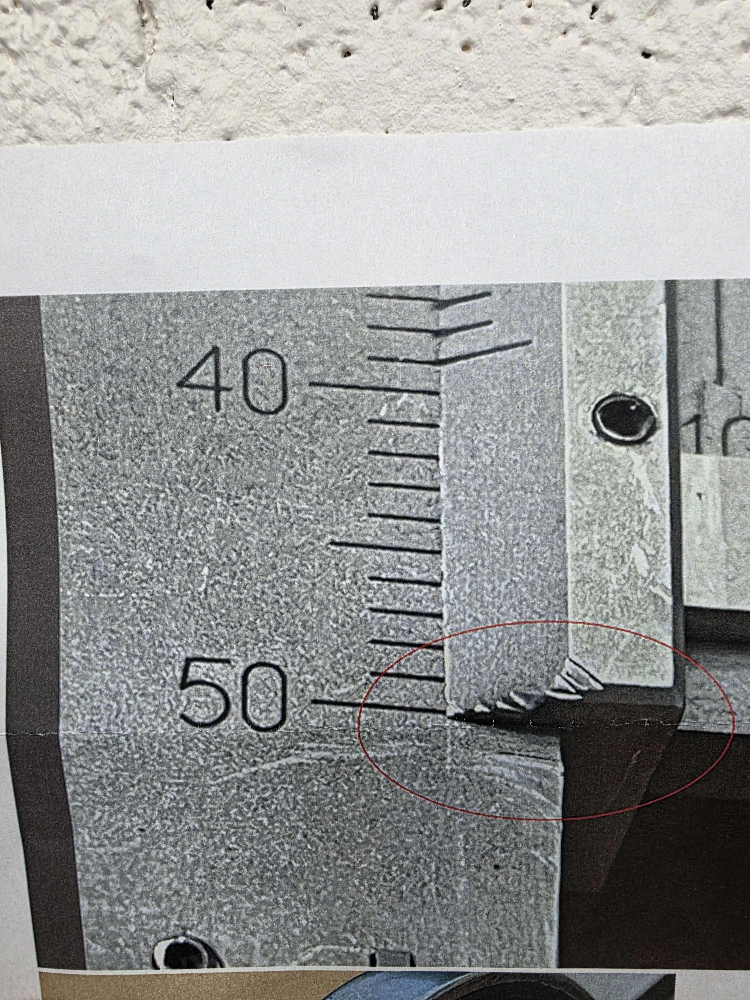
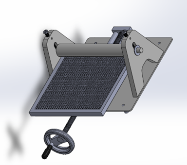

Assemblage & métrologie
Montage d’une pige de mesure
Assemblage, ajustement, calibration et contrôle final d’un instrument de mesure mécanique.
Industrial Quality Portfolio
Étudiant ingénieur en Génie Industriel en alternance, orienté qualité industrielle, conception mécanique, contrôle dimensionnel et amélioration continue.
About
Je suis étudiant en alternance en Génie Industriel à Mécavenir, sur le campus de Mantes-la-Ville, dans un cursus d’ingénieur du CNAM. Cette formation en apprentissage me permet de développer une vision complète de l’industrie : conception, production, qualité, méthodes, gestion de projet et amélioration continue.
Mon parcours a commencé par un BUT Génie Mécanique et Productique à l’IUT de Saint-Denis - Sorbonne Paris Nord, où j’ai consolidé mes bases en mécanique, conception, fabrication, lecture de plans et métrologie. J’ai ensuite renforcé ces compétences lors d’un stage chez ACMC, en conception mécanique, avec de la modélisation 3D sous SolidWorks, des plans techniques, des dossiers de fabrication et une prise en compte concrète des contraintes d’atelier.
Aujourd’hui, mon alternance chez GOGRY me permet d’évoluer dans un environnement de mécanique de précision en tant que contrôleur qualité. J’y réalise des contrôles dimensionnels et géométriques sur pièces usinées, j’utilise des moyens de mesure conventionnels et MMT, je participe à la rédaction de documents qualité et j’interviens dans l’analyse de non-conformités ainsi que dans la mise en place d’actions correctives.
Mon ambition est d’évoluer vers un poste d’ingénieur qualité ou d’ingénieur conception. Ce portfolio complète mon CV en montrant plus concrètement mes projets, mes réalisations et ma progression technique.
Work

Assemblage & métrologie
Assemblage, ajustement, calibration et contrôle final d’un instrument de mesure mécanique.

Qualité industrielle
Analyse du défaut, réparation, regravure, contrôle final et traçabilité du produit.

Programmation embarquée
Programme de mesure de température ambiante avec affichage ou transmission des données.

Conception mécanique
Analyse fonctionnelle, choix de concept, dimensionnement et étude de faisabilité.
Let’s work together
Je combine des compétences en conception mécanique, contrôle qualité, métrologie, analyse de non-conformités et outils numériques pour contribuer à des projets industriels concrets.
Conception de pièces et d’ensembles mécaniques, tôlerie, lecture de plans et dossiers techniques.
Rédaction de fiches de contrôle, rapports de conformité, analyse de dysfonctionnements produits et participation aux actions correctives.
Contrôles dimensionnels et géométriques sur pièces usinées, avec moyens conventionnels et machine tridimensionnelle.
Utilisation d’outils bureautiques et collaboratifs pour documenter, suivre et partager les informations techniques.
Notions en programmation Java, simulation de systèmes avec MatLab/Simulink et projets personnels autour de systèmes embarqués.
Communication professionnelle, travail en équipe, esprit d’analyse, organisation, autonomie et ouverture aux retours.
Contact
Disponible pour discuter d’un projet, d’une alternance ou d’une opportunité dans la qualité, la conception ou l’amélioration industrielle.